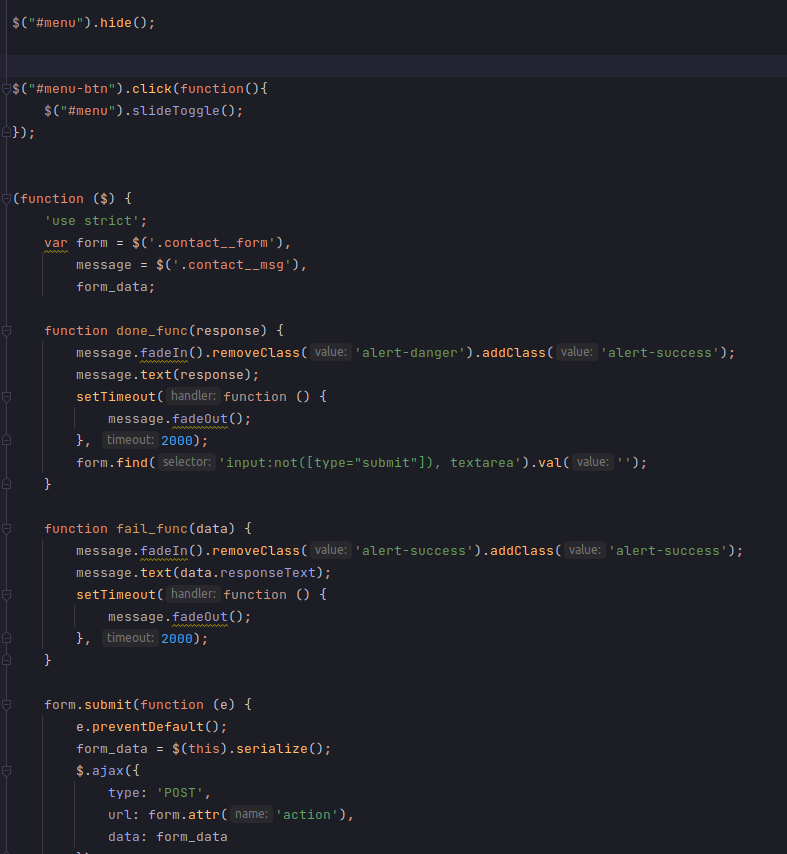
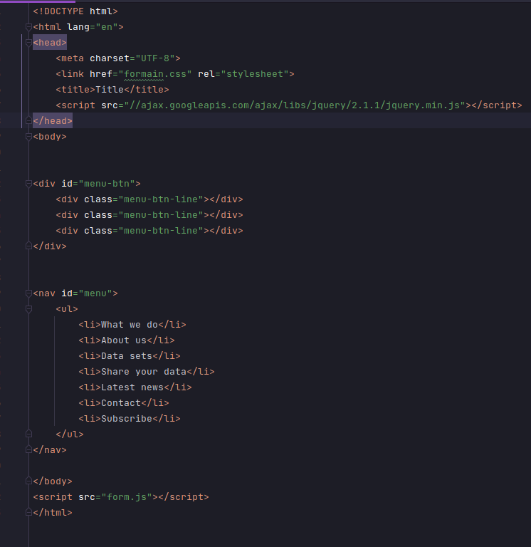
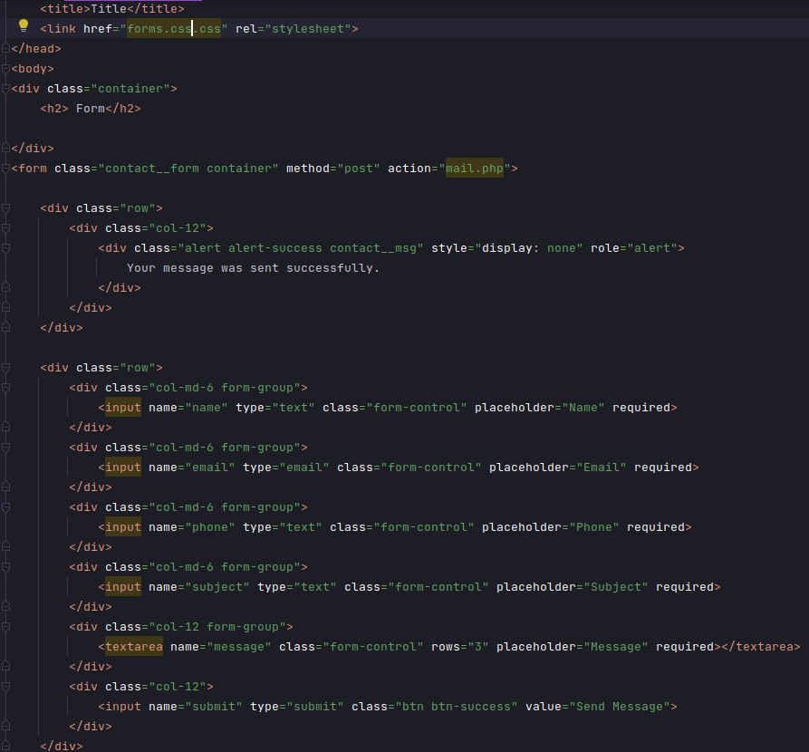
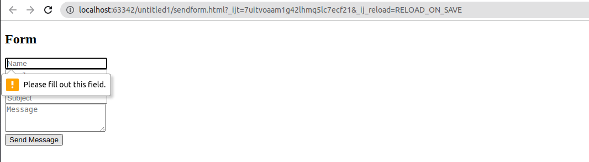
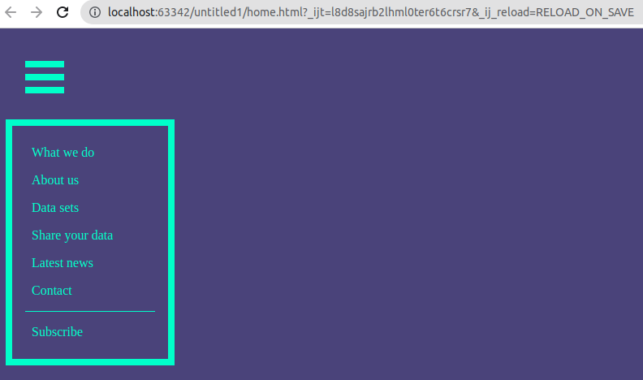

Тема лабораторної роботи:
АСИНХРОННА ВЗАЄМОДІЯ КЛІЄНТСЬКОЇ І СЕРВЕРНОЇ ЧАСТИН WEB- ЗАСТОСУВАНЬ
З ВИКОРИСТАННЯМ ТЕХНОЛОГІЇ AJAX. ФОРМУВАННЯ AJAX-ЗАПИТУ ЗАСОБАМИ JQUERY.
Мета:
придбати практичні навички роботи взаємодії WEB- застосувань з технологієЮ AJAX
Код



Результат:


Наша програма написана з використанням Node.js, вона також містить сервер та відповідну базу даних; виконує наступні дії:
-авторизація(користувач може зайти на сайт та авторизуватися):
зайти під логіном та паролем)
-є сторінка користувача
-користувач може переглядати запропоновані відео і без авторизації і пошуку
-є розділи за жанрами відео
-створена база даних для зберігання паролів та логінів користувачів за допомогою MySql
У першій лабораторній роботі ПЗ містило у собі пункти такі як перегляд,
пошук відео, та повинна бути змога залишати коментарі,
також повинна була бути можливість у користувача після авторизації,
вносити зміни(додавати чи видаляти відео/коментарі).
Висновки:
Отже,ми ознайомились з технологією AJAX.Сформували AJAX запити за допомогою JQuery
Провели аналіз нашого сайту.